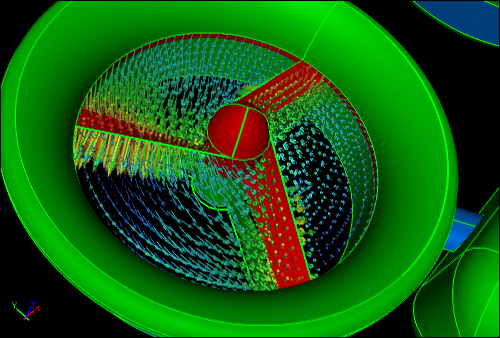

Moving Reference Frame for Computational Fluid Dynamics
A Moving Reference Frame (MRF) is a relatively simple, robust, and efficient steady-state, Computational Fluid Dynamics (CFD) modeling technique to simulate rotating machinery. For example, the rotors on a quadcopter can be modeled with MRFs.
 MRF CFD Simulation of a Quadcopter in FlightShows streamlines colored by velocity magnitude
MRF CFD Simulation of a Quadcopter in FlightShows streamlines colored by velocity magnitude
An MRF assumes that an assigned volume has a constant speed of rotation and the non-wall boundaries are surfaces of revolution (e.g., cylindrical, spherical, conical). In the case of the quadcopter example the volumes between the rotor blades are designated as MRFs, assigned rotational speeds, and embedded within a multi-volume flow domain.
MRF is equivalent to running a rotational simulation and then observing the results at the instant equivalent to the position of the rotor within the MRF. MRF assumes a weak interaction between the MRF volume and the surrounding stationary volumes.
MRF CFD Simulation of Ducted FanShows velocity vectors within MRF volumes
An alternative to MRF is the moving/sliding mesh technique, which can deal with strong interactions between the moving volume and the surrounding stationary volumes. However, in practice the moving mesh technique often has robustness problems due its dependence on intersection calculations between the stationary and rotating volumes. Also the moving mesh technique is a transient (unsteady) simulation procedure which typically results in extremely long runtimes. Given the significant drawbacks of the moving mesh technique, the MRF is the preferred approach within its limitations.
Notes
- MRF is also known as the 'frozen rotor approach'
- The quadcopter (symmetrical half model) geometry was created in Caedium Professional. The CFD simulation was performed using the incompressible, steady-state RANS solver, with multiple MRF, and the k-omega SST turbulence model
Feedback
Questions? Ideas? Problems?

Recent blog posts
- CFD Simulates Distant Past
- Background on the Caedium v6.0 Release
- Long-Necked Dinosaurs Succumb To CFD
- CFD Provides Insight Into Mystery Fossils
- Wind Turbine Design According to Insects
- Runners Discover Drafting
- Wind Tunnel and CFD Reveal Best Cycling Tuck
- Active Aerodynamics on the Lamborghini Huracán Performante
- Fluidic Logic
- Stonehenge Vortex Revealed as April Fools' Day Distortion Field
 Get our Blog feed
Get our Blog feed
Comments
Quadrotor CFD
Hello!
I'm a PhD student in the fields of automation and robotics from Spain. Currently, I have to do both CFD simulations of a quadrotor in hovering and movement. My objective is to determine the optimal positions for temperature/humidity and gas sensors in the quadrotor. I believe your simulation looks quite good and I'm thinking about using Caedium for mine. Can you provide me information to reproduce this simulation or directly the model of the quadrotor? If you want we can collaborate for a publication.
You can contact me here or at: jj dot roldan at upm dot es.
Thanks!
Need your own design
This idealized model was constructed as a demonstration. I doubt it would make a good basis for an actual quadcopter. The takeaway here is that you can simulate such a configuration in Caedium using MRF for your own unique design.
MRF and SRF and Boundary condition
Hello,
I have a question about using SRF.
Let's consider two rotation discs ( such as 2 CDs) and the flow is between them. How can I use MRF for this simulations? There will be only one zone, so it is SRF ( single ref. frame). Then can the solid wall be part of the bottom and top walls of the MRF internface?
I would be thankful is someone can help me.
MRF not needed
Assuming the disks are axi-symmetric then you don't need a MRF or SRF, just assign an angular velocity to the disk surfaces as for the wheel in the tutorial "Flow Over a Rotating Wheel with Moving Ground" then
Hello and thanks for your
Hello and thanks for your reply...
I have two more questions
1) is it possible that the MRF interface ( or part of it ) be the outer radius of the solid impeller? For example in a centrifugal pump, is it possile that the MRF interface radius be exactly the radius of the impeller?
2) is it possible that the bottom part of the impeller be the solid wall?
please check the following link for more details, in which I need to define the MRF zone and the locaion of interface.
Thanks in advance
Your system does not allow me
Your system does not allow me to add the link of my question which I have posted on CFD online webiste...
Thanks
Model single passage using cyclic condition
Typically for a centrifugal compressor/pump you'd only model a single passage way by using cyclic conditions and then assign the MRF to be the rotating portion of the air in contact with the blades. As an example see "Centrifugal Compressor Passage CFD Simulation".
MRF assumes that any wall that lies within or on the MRF volume is rotating, to override this behavior assign a zero angular velocity to the required stationary walls.
I don't see the link that you referenced, so I'm having a hard time visualizing your scenario.
URL links are not restricted
Adding URL links is not restricted e.g., https://www.symscape.com/blog/caedium-v4-sneak-peek-centrifugal-compress...
Still I cannot add the
Still I cannot add the link...
I permanently receive this message :
"Your submission has triggered the spam filter and will not be accepted. If you feel this is in error, please report that you are blocked."
anyway,,,if you have an emal, I can send it to you and you can put it on your website by yourself.
Tnx
Use our contact form
Are your questions about how Caedium deals with MRF? If not then I don't think my answers are generally applicable across other CFD codes.
Use our Contact Form to share the URL.
Small question about MRF
Hello!
In the MRF solver, we need to change the source equations (for instance, the URANS equations) by adding some additional terms to take the additional forces into account, but we don't need to change the equation of the turbulence models (for instance kOmegaSST-model).
My question is:
Why we don't need to change the equations of the turbulence models, and where can I find the explanation of this problem (In which reference)?
Many thanks!
MRF
Dear Richard, for the MRF CFD Simulation of Ducted Fan you showed, what is the benefit of including the rotating blades in the ducts?
If blades (statationary) are ignored, do you still have the downward moving airstream ?
MRF simulating rotating blades
Without the MRF simulating rotating blades there would not be the accelerated, downward moving airstream. Why do you ask?